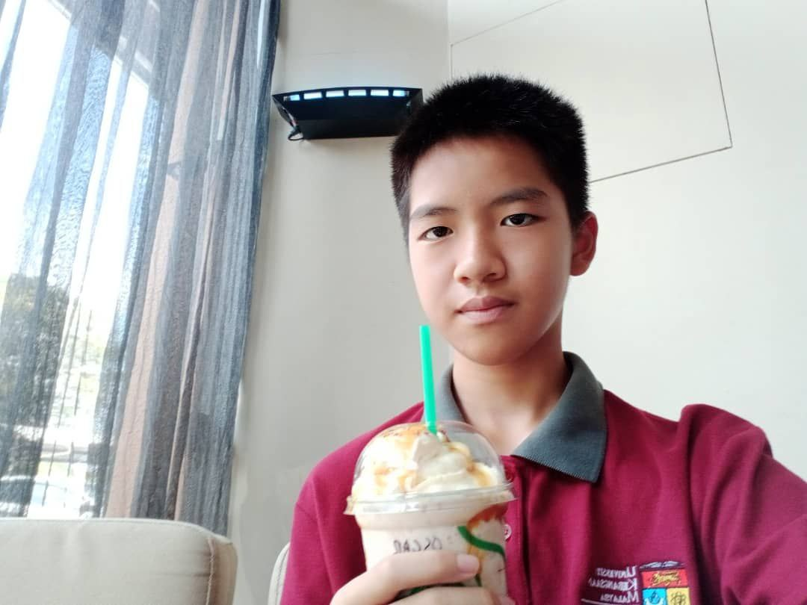
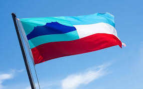
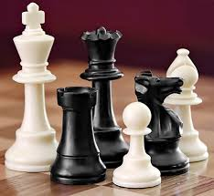
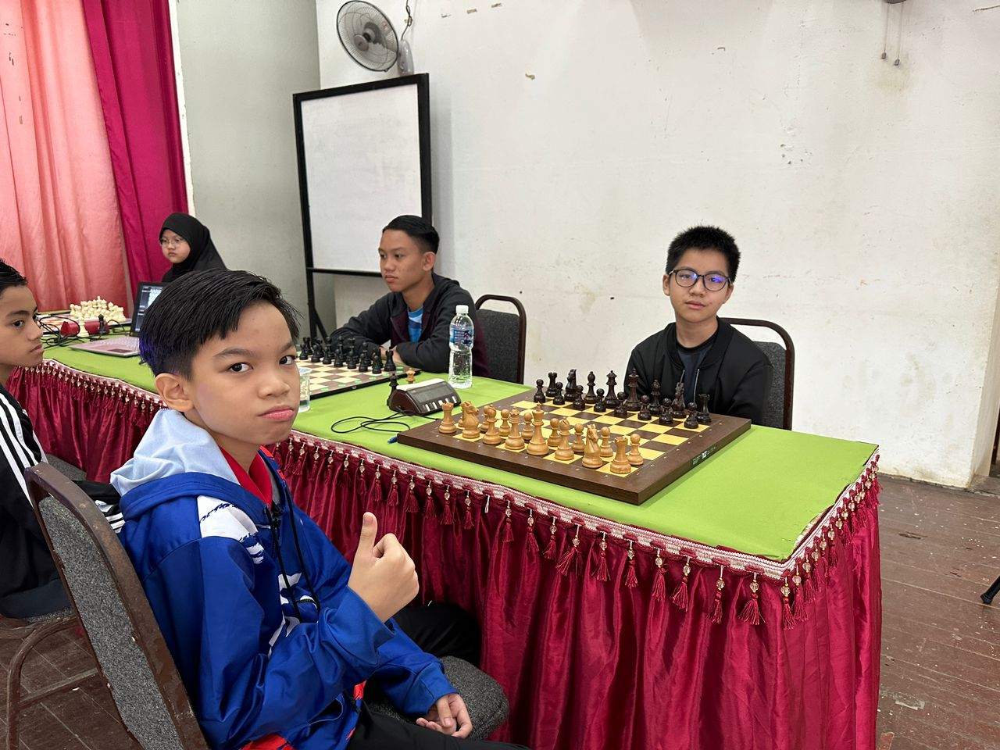
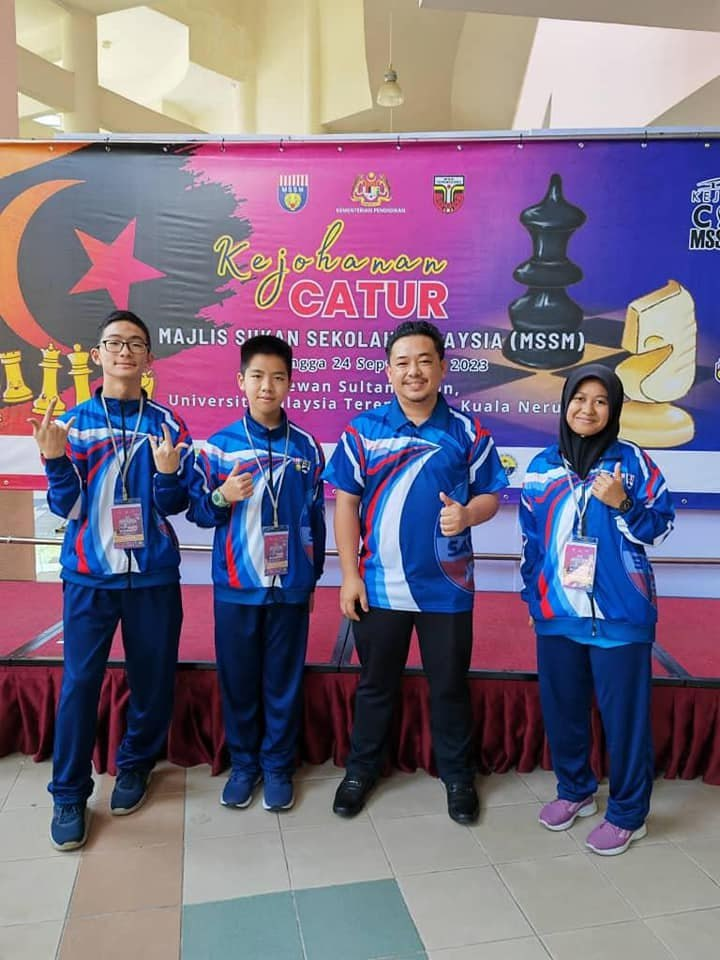
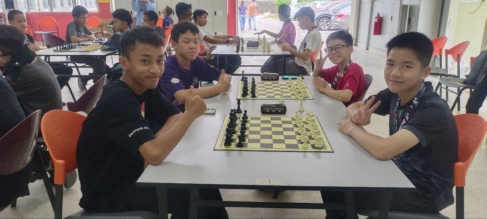

PERSONAL INFORMATION


NAME: Chong Lok Phen(Oscar)
AGE: 13yr old
BIRTHPLACE: Lahad Datu, Sabah
SCHOOL: Kolej PERMATA@Pintar Negara
CLASS: 1K6
HOBBIES: Playing Chess, Playing the Piano, Coding and Robotics
I was introduced to the game of Chess by my aunt(if not mistaken). I was very interested into the game as it was very fun and full of techniques. Since then, I began to learn the game and played it in my free time.

I started to have a little bit of training every week. I learned various skills from my coach, who is a chess teacher from my mother's school. I also started to play chess more frequently every day.
I entered my 1st chess competition and started competitive play. The first competition I participated in was the MSS for my district. I went on to MSSS(Majlis Sukan Sekolah Sabah) in the U9 category and got 1st place. After that, I began to join more chess competitions, both online and over the board. The next year, I also got into MSSS but I lost because I was lack of experience.
I entered the MSS again, but this time was one of the worst. I lost 2 rounds because of careless mistakes and I didn't even made it to state level. However, I knew that I wasn't training enough on chess but rather on robotics. So, I played chess everyday on my free time for an entire year and I didn't skip a single day. I also o joined many competitions online which are national level.
This was my best year for chess so far. It was also my last year in primary school which means it will get a lot harder after this. I went to join the MSS again. Suprisingly, hard work paid off. I went to my first and last U12 MSSS and won 3rd place with 7.5/9(3 draws). I went on to go to MSSM at Terrenganu but even though my team didn't won, I was a once in a lifetime experience.


I represented the school to MSS but lost because I didn't practice again. But I know that after I come here I will have better chance and more opportunities in chess. I still continue to practice every day but less frequently as I haven't found a coach. But I hope that I will be able to achieve my goal - The Grandmaster Title.
